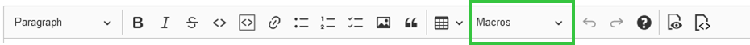

Starting with version 8.0.0, OpenProject features a quasi-WYSIWYG editor, powered by CKSource CKEditor5. The underlying format is GitHub-flavored CommonMark (GFM). All previous textile-based content will be migrated when upgrading to OpenProject 8.0.
| Topic | Content |
|---|---|
| Basic formatting | Basic formatting elements in the WYSIWYG editor |
| Image handling | How to add images in the WYSIWYG editor? |
| Macros | Available macros in the WYSIWYG editor |
| Links to OpenProject resources | How to link to resources like wikis, projects, meetings? |
| Embedding of work package attributes and project attributes | How to embed attributes and attribute help texts? |
The CKEditor5 build in OpenProject supports basic text styles, such as bold and italic formatting, headings, strike-through, inline code, and quotes as well as inline image handling. Pasting content such as images or rich text is also supported, while unsupported styling will be stripped by the editor.
Instead of creating a new paragraph with Enter, you can also press SHIFT+Enter to create a line break without creating a new paragraph.
Create hyperlinks by pressing the tool-bar (optionally with some selected text), or by pressing CTRL+k to open a popup to enter the link href.
CKEditor uses widgets to display block elements such as images, tables, and other elements that are not inline. You can select most widgets by pressing on it - The only exception to that is the table widget, it has a little select knob at the top left to select the entire table.
When you have a widget selected, you can remove or cut it. You can create a newline below it by selecting the widget and pressing ENTER or ↓ (ARROW DOWN), or a newline above it by pressing SHIFT+enter or ↑ (ARROW UP). This is especially needed when the widget is the first or last element on the page to insert a line below or above it.
As CKEditor5 currently does not provide support for code blocks, OpenProject can display, but not edit code blocks within the CKEditor instance. A code block can be edited through a modal window within a CodeMirror editor instance. This has the advantage of providing syntax highlighting and code sensing (for supported languages).
The GFM extension of the CommonMark specs adds a definition for table syntax which the CKEditor build of OpenProject supports. This definition requires all tables to have a heading row. For tables created with CKEditor without heading rows, a HTML table is output instead. This matches the behavior of, e.g., GitHub.
CKEditor5 allows certain CommonMark-like autoformatting keyboard strokes:
**will become bold**, _will become italic_,#, ##, ###, …* or - and a space1. or 1) and a spaceIn supported resources of OpenProject where attachments are allowed, you can add images to the page by either
The attachment will be automatically uploaded and stored as an attachment.
OpenProject has supported macros on textile formatted pages and continues to do so with the WYSIWYG editor. Note that macros are not expanded while editing the page, instead a placeholder is shown.
You can find the macros here in the text editor: 
Where applicable, the table of contents (TOC) macro will output a listing of all headings on the current page.
Configure a button or link to target the work package creation screen in the current project. You can preselect a work package type that should be selected, making it easy to guide the users to the work package creation form.
Include the content of a given wiki page in the current, or another visible project.ww
This is the most flexible macro that provides extensive functionality regarding the inclusion of dynamic work package tables with all the potential of the regular work package table.
By adding an embedded work package table through the toolbar, you can configure the table view (such as columns, grouping, filters, and further properties) in a popup window.
The rendered page will then fetch the work package table results dynamically, respecting the visibility for each user.
Use it to embed views in other pages, create reporting of multiple results, or to embed a Gantt chart view.
As with the textile formatting syntax, you can link to other resources within OpenProject using the same shortcuts as before. Create links to a:
[[Wiki page]][[Wiki page|The text of the link]][[Sandbox:Wiki page]]#12##12###12version#3, version:"Release 1.0.0"project#12 , project:"My project name"attachment:filename.zipmeeting#12 , meeting:"My meeting name"document#12 , document:"My document name"user#4 , user:"johndoe"message#1218r43commit:f30e13e4source:"some/file"To avoid processing these items, preceding them with a bang ! character such as !#12 will prevent linking to a work package with ID 12.
For work packages and users, typing # or @ will open an autocompleter for visible work packages and users, respectively.
You can embed specific attributes of work packages or projects using a certain syntax. Examples:
workPackageValue:1234:subjectprojectValue:statusworkPackageValue:"Project start":subjectYou can also embed attribute values and their help texts by using workPackageLabel instead: workPackageLabel:1234:status would output the translated label for “Status” and (if exists), the corresponding help text for it.
The following list contains all supported attribute names for the workPackageValue and workPackageLabel macros, where 1234 stands for the work package ID.
| Attribute | Usage example |
|---|---|
| Custom Fields | workPackageValue:1234:"Name of the work package custom field" |
| Assigned user | workPackageValue:1234:assignee |
| Author | workPackageValue:1234:author |
| Category | workPackageValue:1234:category |
| Creation date | workPackageValue:1234:createdAt |
| Finish date | workPackageValue:1234:dueDate |
| Estimated time | workPackageValue:1234:estimatedTime |
| Parent work package | workPackageValue:1234:parent |
| Priority | workPackageValue:1234:priority |
| Project | workPackageValue:1234:project |
| Remaining hours | workPackageValue:1234:remainingTime (sic!) |
| Responsible user | workPackageValue:1234:responsible |
| Spent time | workPackageValue:1234:spentTime |
| Start date | workPackageValue:1234:startDate |
| Status | workPackageValue:1234:status |
| Subject / Title | workPackageValue:1234:subject |
| Work package type | workPackageValue:1234:type |
| Date of last update | workPackageValue:1234:updatedAt |
| Version | workPackageValue:1234:version |
The following list contains all supported attribute names for the projectValue and projectLabel macros. The examples all show references to the current project the document is rendered in. They can also reference another project with projectValue:"Identifier of the project":attribute.
| Attribute | Usage example |
|---|---|
| Custom Fields | projectValue:"Name of the project custom field" |
| Project active? (boolean) | projectValue:active |
| Description | projectValue:description |
| Identifier of the project | projectValue:identifier |
| Name of the project | projectValue:name |
| Status | projectValue:status |
| Status description | projectValue:statusExplanation |
| Parent project | projectValue:parent |
| Project public? (boolean) | projectValue:public |